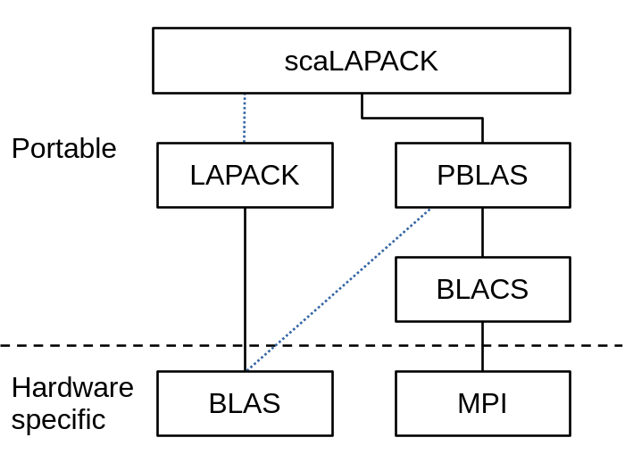
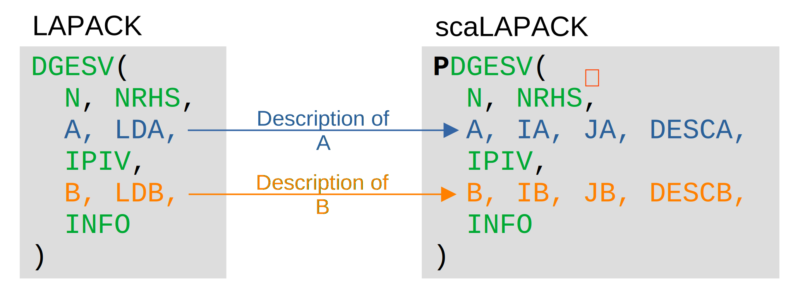
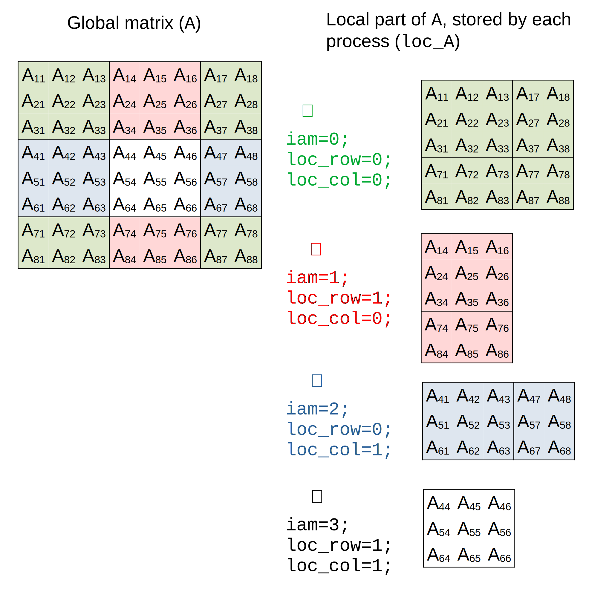

A gentle introduction to (sca)LAPACK(e)¤
Info
Information on scaLAPACK is sparse online, with most resources limited to a few blog posts or StackOverflow questions. The most comprehensive source of information is the scaLAPACK User's Guide.
The most detailed documentation for understanding the usage of each argument is often found in the source code of the reference implementation, which isn't the most user-friendly approach.
This document aims to guide you through the somewhat obscure world of scaLAPACK, providing helpful insights along the way.
The linear algebra ecosystem of LAPACK and friends¤
Before diving into some code, it is important to understand from where this scaLAPACK thing comes from, why it is so important, and how to use it in the first place.
A "historical" perspective¤
Basic linear algebra operations, such as matrix and vector manipulations, form the backbone of many scientific applications. However, when it comes to more complex tasks like finding eigenvalues, solving systems of equations, or matrix decompositions, the challenge increases significantly. Fortunately, these complex calculations often rely on a set of common low-level operations, known as kernels, such as matrix multiplication.
BLAS (Basic Linear Algebra Subprograms) is a foundational library that provides these kernels for performing operations on and between vectors and matrices. BLAS is categorized into three "levels," which reflect its historical development:
- Level 1: Vector operations (e.g., dot product, norm, addition).
- Level 2: Matrix-vector operations (including matrix-vector multiplication).
- Level 3: Matrix-matrix operations.
Indeed, the distinction between these levels is mainly historical: Level 1 was developed first, followed by Level 2, and so on. It has no importance in practice.
LAPACK (Linear Algebra PACKage) builds on top of BLAS to perform the more complex operations mentioned earlier, like solving linear systems and eigenvalue problems.
The historical, or "reference," implementations of BLAS and LAPACK are hosted in the netlib repository, often referred to as netlib BLAS & LAPACK or simply the BLAS and LAPACK.
Due to their widespread use, the APIs (i.e., the definitions of routines and their behavior) of both BLAS and LAPACK have become de facto standards. While various implementations exist, they all adhere to the same API and behavior, allowing them to be (in theory) interchanged seamlessly. Different implementations focus on optimizing performance or leveraging modern accelerators like GPUs. BLAS, being the performance-critical component of LAPACK, has more implementations, including OpenBLAS, ATLAS, BLIS, and oneMKL. Notably, oneMKL also includes an implementation of (sca)LAPACK.
As computing and supercomputing infrastructure evolved, the development of distributed memory systems became crucial. In these systems, each processor (or subset of processors) has access to local, typically private, memory. Since computations can only be performed on local data, communication between processors is necessary, leading to the development of the Message Passing Interface (MPI). MPI is another standard that defines a common API for communication via messages. There are various MPI implementations, including OpenMPI and MPICH.
Finally, scaLAPACK is an implementation of a subset of LAPACK routines tailored for distributed memory systems. It is built on top of PBLAS, which provides distributed-memory versions of BLAS routines. Both scaLAPACK and PBLAS are based on MPI but use an abstraction layer called BLACS. Although BLACS was designed to support other message-passing libraries like PVM, MPI is the only choice today.
The resulting hierarchy of these building blocks is illustrated in the following diagram:

There do not exist a lot of implementation of scaLAPACK, which are generally the reference implementation from netlib, but slightly tuned for performances. One can mention oneMKL and AOCL (which also ships a BLAS and LAPACK implementation).
Naming conventions in BLAS/LAPACK¤
BLAS and LAPACK subroutines are distinctive for two key reasons:
-
Incredibly Short Names: Typically written in uppercase (a legacy from Fortran), these names often resemble spells from a classic RPG. In reality, they perform complex operations that can seem magical to non-programmers.
-
Structured Naming Conventions: Despite their brevity, these names follow a specific set of rules that provide meaningful information about the subroutine's function.
In BLAS and LAPACK, the naming convention is <type><mattype><op>, where:
-
<type>refers to the data type the routine operates on:s: Single precision real (float)d: Double precision real (double)c: Single precision complex (float[2])z: Double precision complex (double[2])
-
<mattype>specifies the type and storage format of the matrix (relevant only for matrix-related routines). For example:ge: General matrixsy: Symmetric matrixhe: Hermitian matrixtr: Triangular matrix- Other formats like band (
gb,sb, etc.) and packed storage (sp,tp, etc.) are also used for optimized routines.
Note: Not all matrix types are available for every operation.
-
<op>indicates the operation the routine performs. For example:mv: Matrix-vector multiplicationmm: Matrix-matrix multiplicationev: Eigenvalue computationsvd: Singular value decomposition
Typically, BLAS handles basic matrix and vector operations, while LAPACK offers routines for more complex tasks like solving linear systems, eigenvalue problems, and singular value decomposition.
For reference, see this document for a list of BLAS routines. A list of LAPACK functions is also availble here. Finally, an extensive list can be found here, also providing information about the implementation in other libraries as well.
Several unspoken rules apply to the arguments in BLAS and LAPACK routines.
In general,
A,B,C, etc., typically refer to matrices, whileW,X, etc., refer to vectors.ALPHA,BETA, etc., represent scalar values.M,N, andKare used to denote the dimensions of vectors or matrices.LDA,LDB, etc., refer to the leading dimensions (the length of the first dimension) of matricesA,B, etc., which generally correspond to the number of rows.- Common arguments like
TRANS,UPLO,DIAG, andSIDEare used consistently across routines to indicate matrix properties (e.g., whether to transpose, how the matrix is stored, etc.).
In LAPACK,
- In order to avoid allocating memory for the output, it is not uncommon that the memory space of an input array which shares the dimension of the output is actually also the output.
WORKis an auxiliary workspace array (single or double precision) that the user must allocate, with its size specified byLWORK. Similarly,IWORKandLIWORKrefer to an integer workspace and its size. The required size ofLWORKandLIWORKvaries by routine and input; larger values generally lead to better performance. SettingLWORKto-1will return the optimal workspace size inWORK[0], without performing the routine’s main computation.- An
INFO < 0return value indicates an error with thei-th parameter, whileINFO > 0signals a failure in the algorithm.
These conventions make it easier to understand and use the routines.
What about scaLAPACK?¤
The primary routines in PBLAS and scaLAPACK are prefixed with "P", followed by the name of their non-distributed counterpart. While these distributed routines require additional arguments to describe the layout of vectors and matrices (as explained below), they largely retain the logic and structure of their non-distributed versions (but check the documentation to verify it is the case).
For example, the (P)DGESV routine solve the system of linear equation \(A\,X = B\) where \(A\) is a N-by-N matrix and \(B\) and \(X\) are N-by-NRHS matrices:

In the diagram, the common parts are highlighted in green, showing an almost 1:1 correspondence between the non-distributed and distributed versions.
Warning
Two important caveats to keep in mind:
-
Subset of LAPACK: Since scaLAPACK is only a subset of LAPACK, some routines may be unavailable. Additionally, in terms of matrix storage, only dense, narrow band, and tridiagonal band matrices are supported.
-
Global vs. Local Arguments: to use scaLAPACK, one needs to make a distinction between global and local arguments (see below), a difference that is not reflected in the naming of the arguments. This is the case in the example above with
NHRS, which in its distributed version is the number of column of the submatrixB(see the source code).
The list of available routine is given:
C interfaces?¤
BLAS and (sca)LAPACK were originally written primarily in Fortran. To use them in C, several interfaces are available:
- CBLAS: A C interface provided by most BLAS implementations, which has become a de facto standard.
- LAPACKe: A C interface offered by the few implementations of LAPACK.
- scaLAPACKe: This project, which aims to provide a similar C interface for scaLAPACK, along with its underlying layers, PBLAS and BLACS.
These interfaces share a common set of conventions:
- The function name incorporates that of the original Fortran routine (generally lowercase).
- The order of arguments remains unchanged, though some may be added or removed in a predictable manner, making it easy to translate a Fortran call to a C call without needing extensive documentation.
- Arguments that are input-only and scalar are passed by value rather than by pointer, unlike in Fortran. This is predictable, and compilers typically alert you if you mistakenly pass a pointer instead of a value.
- Unless specified, the array should store data using column-major storage.
Info
scaLAPACKe follows those rules.
See this document for the exact suite of transformations, but in short, PDGESV becomes SCALAPACKE_pdgesv and lacks the INFO parameter, which becomes its return value.
Let's code!¤
In the previous sections, we've explored the underlying logic of both BLAS and LAPACK, which extends naturally to scaLAPACK(e).
However, to fully leverage scaLAPACK(e), it's essential to embrace the SPMD (Single Program, Multiple Data) paradigm.
In this model, parallel execution is achieved by launching multiple processes using a command like mpiexec (details below).
Each process is an independent and autonomous instance executing the same program, possibly on different computers, provided they can communicate with each other.
During execution, each process is assigned:
- a rank, a unique identifier among all processes that allows it to identify itself and potentially modify its behavior, and
- mechanisms to communicate with other processes.
While the SPMD model avoids many issues related to shared memory in thread-based parallelism (since each process has its own private memory), it necessitates efficient data sharing between processes. Additionally, deadlocks are more common with this model, due to the need of explicit synchronization.
Info
Consider the following scenario:
lapack_int a_given_context;
SCALAPACKE_do_A(a_given_context, ...);
if(iam == 0)
do_something_that_only_0_do();
SCALAPACKE_do_B(a_given_context, ...);
With BLACS [and thus, PBLAS and scaLAPACK(e)], communication calls are blocking, meaning a function won't return until all participating processes have completed their respective tasks.
In this example, all processes will execute SCALAPACKE_do_A together.
However, they must then wait for the rank-0 process to complete do_something_that_only_0_do() before proceeding to SCALAPACKE_do_B.
If, for any reason, a process does not reach or execute SCALAPACKE_do_B, a deadlock will occur, halting the entire operation.
To effectively use a scaLAPACKe function, follow these four steps:
- Initialize a process grid, mapping the different processes to positions in a virtual grid.
- Distribute the vectors/matrices across this grid.
- Call the desired scaLAPACKe function.
- Release the matrices and the grid once the computation is complete.
In the rest of this tutorial, we will apply those steps to compute the eigenvalues of a symmetric matrix.
This would be achieved using DSYEV in LAPACK, but all that is now to be realized using scaLAPACKe.
Thus, let's start by including the relevant headers:
#include <scalapacke_blacs.h>
#include <scalapacke_pblas.h>
#include <scalapacke.h>
... And now, let's dig into the recipe.
1. Initialize the grid¤
Following the previous discussion, the first step for a given process is to know the number of processes and its rank. For that, we need to use a BLACS function.
lapack_int iam, nprocs;
SCALAPACKE_blacs_pinfo(&iam, &nprocs);
nprocs now holds the total number of processes, while iam stores the rank of the current process.
According to the BLACS_PINFO specification, 0 <= iam < nprocs.
A common practice is to have the rank-0 process handle tasks that should be executed only once, such as reading or writing files.
In this context, the rank-0 process is often considered the primary process (though not necessarily the first one to start running), while the other processes serve as followers.
Info
Note the use of lapack_int, a type that can be defined to support 32- or 64-bit integers. This is crucial when working with large matrices where addressing large indices is necessary. While you could use int, doing so would reduce portability across systems.
Now it's time to create a process grid. A grid groups processes into a subset that will collaborate on various computational tasks involving matrices distributed across the grid. In this example, we'll request a 2x2 grid:
lapack_int sys_ctx, grid_ctx, grid_M = 2, grid_N = 2, loc_row, loc_col;
// get the system context
SCALAPACKE_blacs_get(0, 0, &sys_ctx);
// create a (grid_M x grid_N) grid
grid_ctx = sys_ctx;
SCALAPACKE_blacs_gridinit(&grid_ctx, "R", grid_M, grid_N);
// request my position in the grid
SCALAPACKE_blacs_gridinfo(grid_ctx, &grid_M, &grid_N, &loc_row, &loc_col);
Each process grid is identified by a context, which is derived from the main (or system) context.
To create a grid, first request the main context using BLACS_GET and store it in sys_ctx.
To preserve the value, store it in grid_ctx.
Next, use BLACS_GRIDINIT to initialize the grid, which will automatically map each process to a position within the grid (or outside if it doesn't belong to the grid).
This is illustrated below:

Arguments of BLACS_GRIDINIT
- The context (
grid_ctx). It serves as both input and output, meaning it accepts the main context and returns the new grid context. - How processes are mapped onto the grid (here
"R", meaning in row-order), though this detail is generally not critical. - The number of rows that the grid should contain, and of columns (
grid_M, grid_N).
You can create as many grids as you want, which is useful if a given task requires a different grid.
You can also use BLACS_GRIDMAP to manually map the processes to the grid, which is useful if you want to create disjoint grids (e.g., if you want to map a part of the processes on a given grid, and the other part on another).
Warning
If the number of processes is fewer than the grid size, BLACS_GRIDINIT will abort the program.
In the example above, this means that the program must be run with at least 4 processes.
Extra processes beyond the grid size will remain idle and perform no computational tasks. From a user's perspective, this situation should be avoided, as increasing the number of processes without adjusting the grid size will not result in any speedup. Therefore, it's generally advisable to adapt the grid size to match the number of processes. The optimal grid shape and size, however, will depend on the specific problem being solved.
Finally, use BLACS_GRIDINFO to get the position of the process within the grid.
If the process is within the grid, 0 <= loc_row < grid_M && 0 <= loc_col < grid_N, otherwise, loc_row == -1 && loc_col == -1.
Note that in this function, grid_M and grid_N are output parameters, meaning you can call this function at any time to retrieve the grid size and the process's position within it, as long as you provide its grid context, grid_ctx.
Note that all processes should execute BLACS_GRIDINIT, maybe to discover with BLACS_GRIDINFO that they are not part of this grid.
2. Distribute data on the grid¤
scaLAPACK expects arrays to be divided into blocks that are distributed among the processes in a grid. Specifically, it uses a block cyclic distribution algorithm.
For example, consider a 8x8 array with 3x3 blocks:

As shown, not all processes hold all the data. The entire array is referred to as the global array, which is scattered across different processes. Each process only stores a portion of the global array, known as the local memory or submatrix. This approach is efficient in terms of memory usage.
While the formulas to determine the shape of the local array and the position of each element within it are straightforward to derive, helper functions are already available.
To determine the shape of the local matrix, you can use the auxiliary function NUMROC function (NUMROC stands for "NUMber of Rows Or Columns"):
if (loc_row >= 0 && loc_cols >= 0) { // if process is on the grid
lapack_int blk_size = 3, M = 8, N = 8;
// Starting from a MxN matrix, compute the shape of the local one, loc_Mxloc_N
lapack_int loc_M = SCALAPACKE_numroc(M, blk_size, loc_row, 0, grid_M);
lapack_int loc_N = SCALAPACKE_numroc(N, blk_size, loc_col, 0, grid_N);
Arguments of NUMROC
To determine the local dimensions (number of rows and columns), the NUMROC function requires the following arguments:
- Global dimension length: the size of the corresponding dimension of the global array (
M/N). - Block size: the size of each block in the block cyclic distribution (
blk_size). - Process coordinate: the coordinate of the process within the grid for that dimension (
loc_row/loc_col). - Process owning index 0: the coordinate of the process that owns index 0 in that dimension (here, it is
0). - Grid dimension size: the total number of processes in that grid dimension (
grid_M/grid_N).
By definition, 0 <= loc_M < N && 0 <= loc_N < N.
With these values, you can then allocate the submatrix locally.
// Allocate the local memory
double* loc_A = calloc(loc_M * loc_N, sizeof(double));
The last step before filling the array is to create a descriptor, which describes how it is scattered across the process grid, using the auxiliary function DESCINIT:
lapack_int loc_LD = loc_M;
lapack_int desc_A[9];
SCALAPACKE_descinit(desc_A,
M, N, blk_size, blk_size,
0, 0, grid_ctx,
loc_LD);
To create a descriptor for scaLAPACK, you need to provide 9 arguments that will define the structure of the data distribution across the process grid. The descriptor will be used by ScaLAPACK functions to map between local and global arrays.
Arguments of DESCINIT
-
Descriptor array (
lapack_int desc_A[9], output): an array of 9 integers that will be filled to define the descriptor. -
Global array dimensions (
M, N): the dimensions of the global array, whereMis the number of rows andNis the number of columns. -
Block size (
blk_size, blk_size): the block size along both dimensions of the array. -
Process grid coordinates (
0, 0): the coordinates of the first process in the process grid. For most use cases, this will be(0, 0), indicating the top-left corner of the grid. -
Grid context (
grid_ctx): the BLACS context that defines the process grid. This context manages the communication between processes. -
Leading dimension (of local submatrix) (
loc_LD): the leading dimension of the local submatrix, which is typically the number of rows in the local block. This must satisfyloc_LD >= loc_M.
Once this descriptor is initialized, it can be passed to PBLAS/scaLAPACK functions, enabling them to correctly interpret the mapping between the local data (distributed across the processes) and the global array. This ensures that operations performed by scaLAPACK are correctly applied to the global matrix in a distributed computing environment.
Note
If you have multiple arrays of the same size distributed across the same grid, you don't need a separate descriptor for each one. A descriptor simply describes how an array of a specific size is distributed on a particular grid, so one descriptor can be reused for all arrays with the same distribution.
To fill the local parts of the array, we have two solutions:
- Filling the array locally, or
- Creating the array on one process and communicate.
Let's explore the two options.
Filling the array locally¤
If the array's contents can be determined locally on each process, this is the preferred approach as it eliminates the need for inter-process communication.
To do this, you must map local indices to global indices, which can be done using the auxiliary function INDXL2G. This function facilitates the mapping from a local array element loc_A(loc_i, loc_j) to the corresponding global array element A(glob_i, glob_j).
Parameters of INDXL2G
-
Local Index: The index of the element within the local block on the process (
loc_i/loc_j). -
Block Size (
blk_size): The size of the block in the corresponding dimension (rows or columns,blk_size). -
Local Dimension Length: The number of rows or columns in the local array for that dimension (
loc_row/loc_col). -
First Process: The process coordinate (in the grid) where the distribution of blocks begins. Typically, this is set to
0. -
Grid Dimension Length: The total number of processes along the corresponding dimension (rows or columns) in the process grid (
grid_M/grid_N).
For example, consider making the global array A symmetric, where each element is defined by the formula:
In this case, you would use INDXL2G to determine the global indices glob_i and glob_j corresponding to the local indices loc_i and loc_j, then apply the formula locally to fill the array.
// fill array locally
for(lapack_int loc_j=0; loc_j < loc_N; loc_j++) {
lapack_int glob_j = SCALAPACKE_indxl2g(loc_j + 1, blk_size, loc_col, 0, grid_N);
for(lapack_int loc_i=0; loc_i < loc_M; loc_i++) {
lapack_int glob_i = SCALAPACKE_indxl2g(loc_i + 1, blk_size, loc_row, 0, grid_M) ;
// set loc_A[loc_i,loc_j] with the content of A[glob_i, glob_j]
loc_A[loc_j * loc_LD + loc_i] = 1 + .5 * fabs((double) (glob_i - glob_j));
}
}
Warning
Notice that:
- the code store the data in the array using column-major ordering.
- When passed to scaLAPACK(e) function, array index starts at one rather than zero.
Broadcasting the array¤
When it is not feasible to create the array locally on each process—such as when the data is read from a file—an alternative approach is to create the global array on a single process and then distribute the blocks to other processes.
This can be efficiently accomplished using one of the P?GEMR2D auxiliary functions, such as PDGEMR2D for double-precision arrays.
First, a new grid is needed that includes only the rank-0 process, which will be responsible for creating and initially holding the global matrix. This grid is created as follows:
// this grid should be created right after grid_ctx
// Reminder: all processes should call GRIDINIT,
// only to discover later that they are not part of it ;)
lapack_int ctx_0 = sys_ctx;
SCALAPACKE_blacs_gridinit(&ctx_0, "R", 1, 1);
Here, ctx_0 is the new grid context for the rank-0 process, where the global array will be created.
Next, a descriptor for the global matrix is created, and the matrix is allocated and filled by the rank-0 process:
double * glob_A = NULL;
lapack_int desc_glob_A[9];
if(iam == 0) {
// create a proper descriptor for this array
SCALAPACKE_descinit(desc_glob_A, M, N, M, N, 0, 0, ctx_0, M);
// fill global array
glob_A = calloc(M * N, sizeof(double));
for(lapack_int glob_j=0; glob_j < N; glob_j++) {
for(lapack_int glob_i=0; glob_i < M; glob_i++) {
glob_A[glob_j * M + glob_i] = 1 + .5 * fabs((double) (glob_i - glob_j));
}
}
} else
desc_glob_A[1] = -1; // Mark processes that do not allocate the global array
In this setup, only the rank-0 process allocates and fills glob_A.
All other processes signal that they do not hold a part of the global array by setting the second element of the descriptor (i.e., desc_glob_A[1]) to -1.
Once the global matrix is ready on rank-0, it can be redistributed to all processes in the main grid (grid_ctx) using PDGEMR2D:
// Distribute the global matrix across the process grid
SCALAPACKE_pdgemr2d(
M, N,
glob_A, 1, 1, desc_glob_A, // Source: global matrix on rank-0
loc_A, 1, 1, desc_A, // Destination: local matrices on each process
grid_ctx
);
if (iam == 0)
free(glob_A); // Free the global matrix on rank-0 after redistribution
Arguments of PDGEMR2D
-
Global array shape: the number of rows and columns in the global array (
M, N). -
Source Matrix:
glob_A: Pointer to the memory holding the global matrix.1, 1: Coordinates of the starting element in the source matrix.desc_glob_A: Descriptor for the global matrix.
-
Destination Matrix:
loc_A: Pointer to the local matrix on each process.1, 1: Coordinates of the starting element in the destination matrix.desc_A: Descriptor for the local matrix.
-
Grid context: the context that includes all processes involved in the source and destination grids (here,
grid_ctx).
Note that there are additional point-to-point and broadcast communication of arrays functions available at the BLACS level. For a comprehensive overview, refer to the BLACS quick reference guide.
Furthermore, for an example of point-to-point communication, you can explore one of our test programs, which demonstrates the use of the ?GESD2D and ?GERV2D functions for sending and receiving data between processes.
3. Call the function¤
Now that we have one array distributed on the grid, we can finally perform some calculation. Of course, you can follow the same steps to distribute other arrays to compute more complex things.
Local versus global arguments
scaLAPACK distinguishes between local and global data. Indeed, local arguments may have different values on each process in the process grid. Global arguments must have the same value on each process.
To finish our example, let's compute the eigenvalues of \(A\), using PDSYEV (since \(A\) is symmetric).
The function requires an auxiliary workspace, WORK, for which the rules are a bit convoluted.
We will therefore make two calls: one to request the ideal size, the second to actually do the calculation:
// request the size of `WORK` by setting `LWORK` to -1
double tmpw;
SCALAPACKE_pdsyev(
"N", "U", N,
loc_A, 1, 1, desc_A,
w,
NULL, 1, 1, desc_A,
&tmpw, -1);
lapack_int lwork = (lapack_int) tmpw;
// compute the eigenvalues, stored in `w`
double* w = calloc(N, sizeof(double ));
double* work = calloc(lwork, sizeof(double ));
SCALAPACKE_pdsyev(
"N", "U", N,
loc_A, 1, 1, desc_A, // input matrix
w,
NULL, 1, 1, desc_A, // eigenvectors
work, lwork);
4. Release!¤

"Release" is the final word in Sakura's spell to activate her scepter, so she shouts it in every episode. Couldn't resist the reference! 😉
More seriously, this is just a reminder that all things that were allocated once should be released, including BLACS internals. Thus:
free(work);
free(w);
free(loc_A);
SCALAPACKE_blacs_gridexit(grid_ctx);
}
SCALAPACKE_blacs_exit(0);
// ... Ashes to ashes, dust to dust.
Compilation and execution¤
You can find the source code for this example in this archive.
A meson.build file, compatible with the Meson build system, is also included.
You may need to adjust the ScaLAPACKe-related options according to this documentation.
To build the executable, follow these steps:
# Use the MPI compiler
export CC=mpicc
# Fetch the libraries and prepare the build environment
meson setup _build
# Compile the code
meson compile -C _build
After the compilation completes, a tutorial executable will be created in the _build directory.
To run the executable, use mpiexec, which is provided by your MPI installation.
For example, to launch the application with 4 processes, run:
# to launch the application with 4 processes
mpiexec -n 4 _buid/tutorial
If you monitor your resource manager (e.g., htop) during execution (but you need to be quick!), you will notice that the application is indeed launched four times, corresponding to the four processes.
The program prints the eigenvalues of \(A\). You can check their correctness by running the following Python code:
import numpy
A = numpy.zeros((8, 8))
for i in range(8):
for j in range(i, 8):
A[i, j] = A[j, i] = 1 + .5 * abs(i - j)
print(numpy.linalg.eigh(A)[0])
Notes on Performance¤
The ScaLAPACK documentation offers several performance recommendations:
- Local matrix size of approximately 1000-by-1000.
- Avoid solving small problems on too many processors.
- Use an efficient data distribution with a square processor grid and a square block size (e.g., 64).
However, these guidelines are over 25 years old and may not fully reflect the capabilities of modern hardware and software. Below is an updated set of recommendations:
-
Square Process Grid: A square process grid (
P ≈ Q) generally provides better performance. This configuration helps to balance the computational load and minimize communication overhead. -
Adapt Distribution to Resources: It's important to adapt the data distribution to the number of available processes. Uneven distribution can cause load imbalance, where some processes are idle while others continue to compute, reducing overall efficiency.
-
Optimal Block Size: The block size is crucial for performance, as it impacts both load balancing and communication costs. Typical block sizes range from 32 to 128, but the optimal size may vary depending on the specific problem and hardware.
-
Minimize Communication: Whenever possible, reduce communication between processes. Keeping data local and minimizing data exchange can significantly enhance performance.
-
Memory Alignment: Proper memory alignment is critical for maximizing performance on modern processors. Misaligned memory accesses can lead to cache inefficiencies and slower execution times.
-
OpenMP: for some local computations, you can also take advantage of OpenMP.
By following these updated recommendations, you can achieve better performance in ScaLAPACK, taking full advantage of current computing architectures.
Conclusions¤
Thanks to this tutorial, you know understand better how an application using scaLAPACK(e) should be designed. Now, the sky is the limit to what you can achieve with those tools 😀
Now, don't forget to read about the few quirks of scaLAPACKe.
Few other tutorials on scaLAPACK: